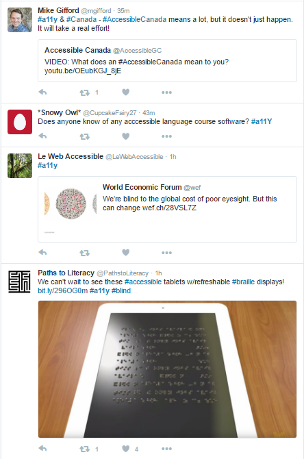
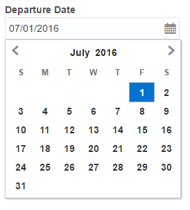
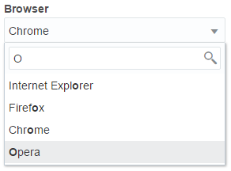
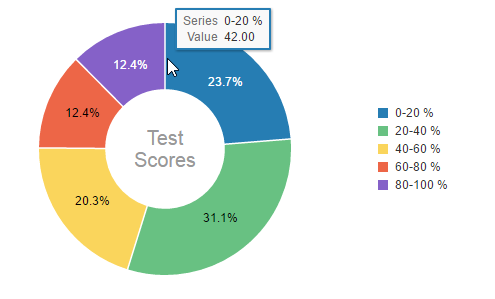
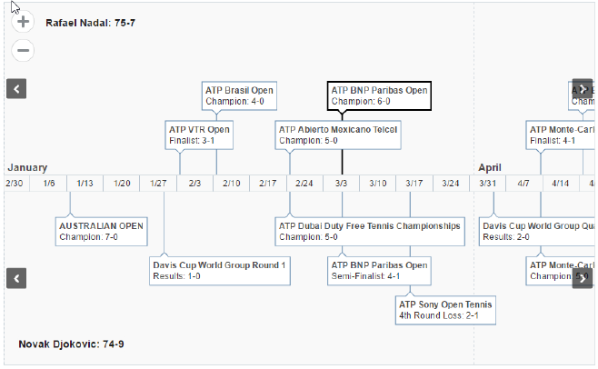
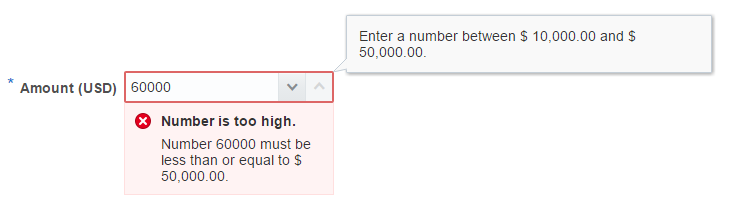

ARIA 1.1 and Beyond
Intuit F2E Summit
June 30, 2016
@jnurthen
About Me
- Worked at Oracle for a long time....
- Accessibility for 10+ years
- W3C ARIA and WCAG working groups
- Co-Editor of ARIA Authoring Practices Guide
- ARIA 1.0
- Reached Recommendation March 2014
- ARIA 1.1
- Quick
- Close Gaps
- Bugfixes
- ARIA Modules
- Graphics Module
- DPUB Module
- ARIA 2.0
WAI-ARIA 1.0
< 5 minute intro
Fake Buttons
But What about Keyboard users?
Fake Buttons
But What about Screen Reader users?
Fake Buttons
- Need to Expose the “Role” (and any states and properties) for an element
- Here this is a “button” or a “push button”
WAI-ARIA Introduction
ARIA defines attributes to convey:
- Role
- What is this? (e.g. button, tab, treeitem)
- States
- What condition it is in (e.g. Pressed, disabled)
- Properties
- Any other information about the item (e.g. position in a set of values)
- Name
- What is the specific name of the item (e.g. Employee Name)
Landmark roles
bannercomplementarycontentinfoformmainnavigationsearch
Document structure roles
articlecolumnheaderdefinitiondirectorydocumentgroupheadingimglistlistitemmathnotepresentationregionrowrowheaderseparatortoolbar
Standalone widget roles
alertalertdialogbuttoncheckboxdialoggridcelllinklogmarqueemenuitemmenuitemcheckboxmenuitemradiooption
progressbarradioscrollbarsliderspinbuttonstatustabtabpaneltextboxtimertooltiptreeitem
Composite widget roles
comboboxgridlistboxmenumenubarradiogrouptablisttreetreegrid
WAI-ARIA 1.0
Was it < 5 minutes?
WAI-ARIA 1.1 - The Easy Stuff
New Roles

role="none"
= role="presentation"
 Image Source
Image Source
role="switch"
<div role="switch checkbox" aria-checked="true">
Equivalents to HTML roles
role="term"dtrole="searchbox"input[type="search"]role="figure"figurerole="password"input[type="password"]

role="feed"
<div role="feed">
<article tabindex="-1">Story 1</article>
<article tabindex="-1">Story 2</article>
<article tabindex="-1">Story 3</article>
<article tabindex="-1">Story 4</article>
</div>- AT "signals" browser where virtual cursor is.
- Feed Role
role="text"
★★★☆☆
US$
19
99
/mo
 Image Source
Image Source
role="table" , role="cell"
<div role="table">
<div role="row">
<div role="columnheader">Header 1</div>
<div role="columnheader">Header 2</div>
</div>
<div role="row">
<div role="cell">Cell 1</div>
<div role="cell">Cell 2</div>
</div>
</div>And some new Properties
Also - new magic value of aria-colcount, aria-rowcount & aria-setsize of -1
Comboboxes
Trees, Dialogs, Grid or Listbox
- Zebra
- Zoom


 Image Source
Image Source
.png){kind=link}
aria-roledescription
- More specific version of a common widget
- A "new" widget without any known convention for how to operate


{kind=link}
<del>role=application<del>
<ins>role=region</ins>
aria-errormessage

Some other miscellaneous changes
- aria-modal
- aria-keyshortcuts
- aria-details
- aria-placeholder
- aria-haspopup (new values)
- aria-current
- aria-readonly, aria-orientation, aria-posinset, aria-setsize (on more roles)
aria-grabbed, aria-dropeffect, (aria-describedat)
Modules
Graphics
Digital Publishing
What is next?
ARIA 2.0
Design Patterns
Potentially integrating (some) of the Modules
Authoring Practices Guide (APG)
- Integrate old Primer (where still relevant)
- Review all the Design Patterns
- Create Hosted (vanilla) examples for all design patterns (help needed!!)
- Fix anything incorrect
Authoring Practices Guide (APG)
How can you help?
- Create Example code
- Log Issues
- Submit PRs for open issues
- All on github https://github.com/w3c/aria-practices
More Information
ARIA 1.1 Authoring Practices(Working Draft)